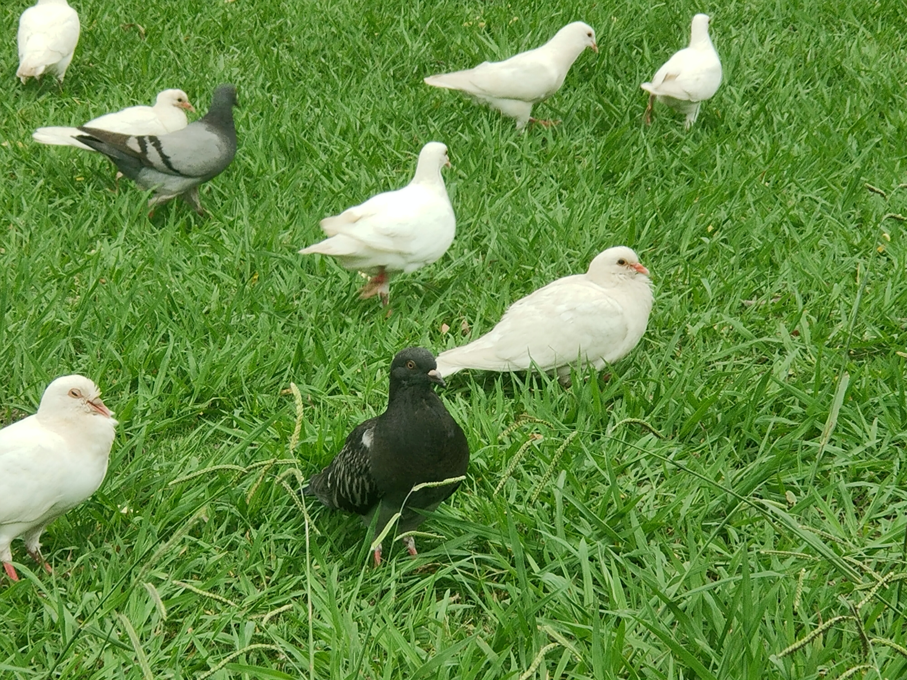
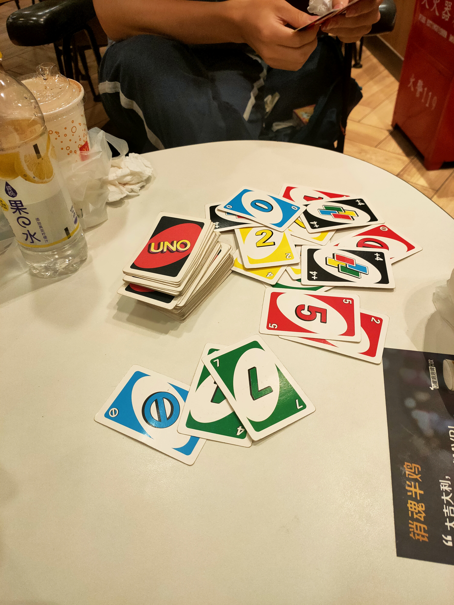

30_Blog
随记
再谈blog
这篇blog可能是我第一次大规模地在blog中引入图片。这么做的考量可能还是我觉得有些东西放在qq或微信上不太好（主要不想让爸妈知道我这两天一直在摸鱼）而且又不太想去屏蔽他们，但这事实上也是一个很表象的原因，因为说到底屏蔽一下很简单的
可能还是受众的问题吧，我观察下来这个blog差不多有4-5个人会访问，主要是我事实上没有怎么推广，要是写一篇在社交平台上推广一篇，估计阅读量会大大提高吧
我大致知道这四五个人是谁，这也很符合我设立这个blog的设想
也不知道，没有想好，我不是很想把很多东西发在社交平台上了，可能后面也不会发在blog上，这是一个变化的过程
但是一旦开始写这篇blog，我所想写的就不是很简单的今天发生的一些事情了，而注定是一篇不短的文章，记录我最近的一些思考和一些事情，每次基本上不是在寝室就是在c200写blog，已经快成习惯了，哈哈，因为生活基本上在这两个地方展开，今天是在寝室，感觉机械键盘用多了之后还是挺舒服的
近代史纲要的考试相关事宜
抱歉，我写完了之后删掉了，我不是很确定我的思考合不合适，而且这不仅仅是我一个人的事情
我就只在本地保留一个草稿，不上传了
寝室的一些布局上面的调整
我买了一张100 * 70 * 75的桌子，准备放在寝室的靠门的那一边
另外你买了一把椅子，那种电脑椅？我觉得寝室里这个椅子真的坐下来怎么都不舒服
好怀念紫竹的寝室啊，那是真的大，要是我大学有这样的寝室，我能玩出花来，现在就只能螺蛳壳里做道场
还没了一个dell的4K，27寸的显示器，我突然发现我现在用的这个显示器就是27寸的。。新买的有一点点贵，但我想万一以后要用MacBook，这样一个显示器到时候也够了，怎么都够了，现在的显示器是1080P的，不是很理想。。
今天的摸鱼
完全学不进去，真的学不进去，一天没做什么事情
中午和yyx去E+咖啡厅吃午饭，吃完了去了一趟学服，办了一下爱心小屋的空调，然后绕着校园走了小半圈吧。下午和yyx研究了一下寝室的布局问题，然后就发现该吃晚饭了

后面叫上wcq出来打牌，去了mdl，mdl的那个杨枝甘露口味的甜筒味道不错，而且感觉挺多的，只要五块钱！
然后打UNO，只有一只手，很不方便，但还是挺有意思的

else
下学期报了一门选修课，那门课以前是给致远理科的，今年不限专业了，但我不知道这门课的上课大纲是什么，之前选课的时候看到了，现在找不到了
然后我就给老师发邮件，问他能不能发我一份，然后他就回了！老师们都经常看邮箱的，我妈也经常看
那门课感觉很硬核，3000字+的小作业，8000字+的大作业，很不妙，我准备先开始看起来，那些书感觉很有意思
还有一点感情方面的思考，这个事情很有意思，很有意思，我很清楚我想不清楚，但是很有意思，也挺好的
明天要学习了！
另外，以后可能想要尝试一下新的生活状态！
本博客所有文章除特别声明外，均采用 CC BY-SA 4.0 协议 ，转载请注明出处！